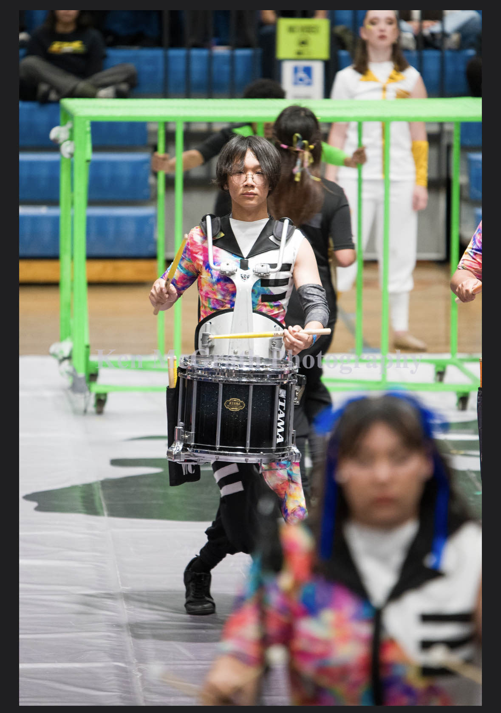
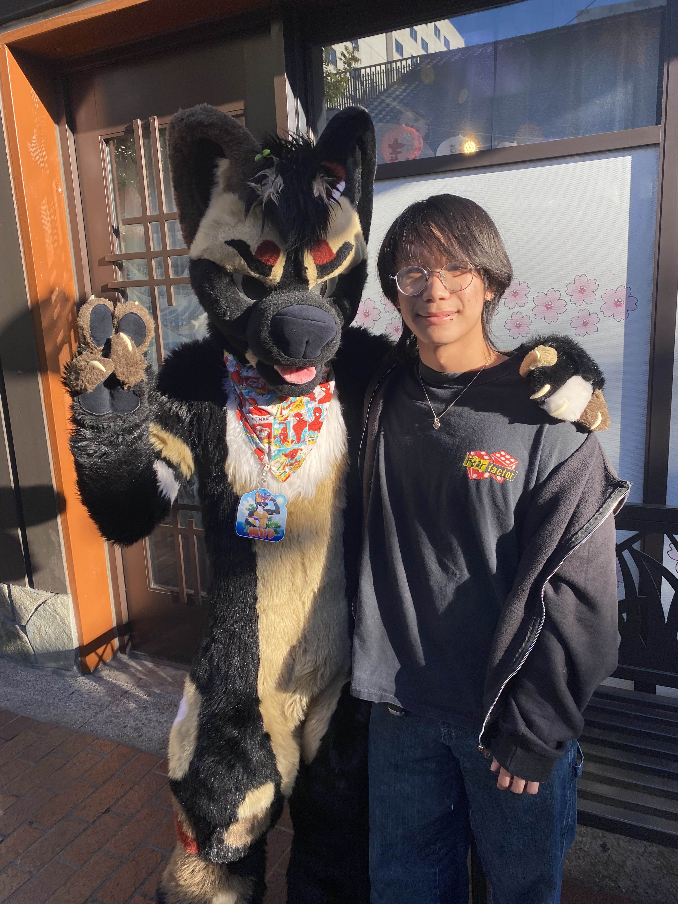
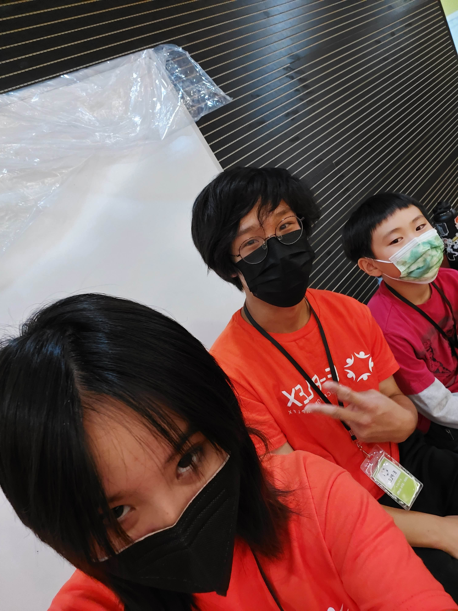
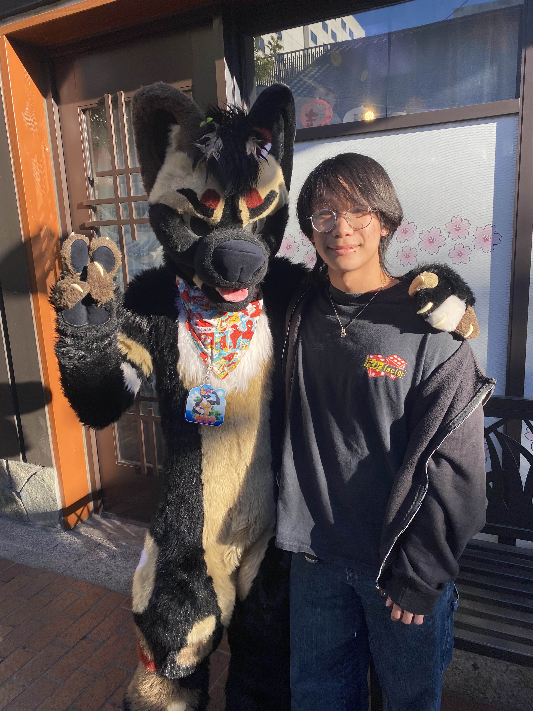
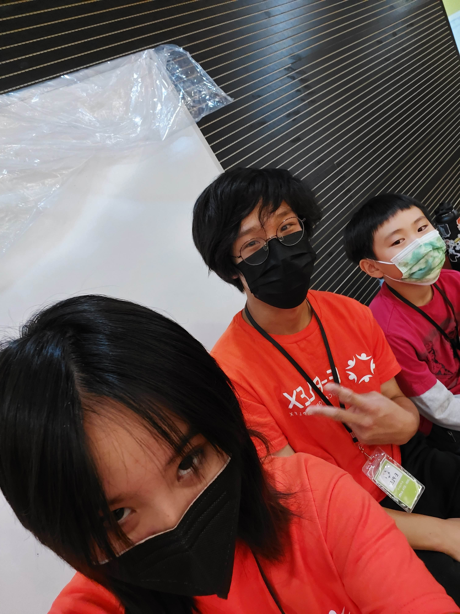

Aidan Lam
Proficient in adapting to fast-paced environments, I thrive under pressure and am always eager to learn and grow. I possess strong communication skills, enabling me to connect effectively with colleagues, clients, and team members in various settings. My ability to resolve conflicts and handle challenging situations with composure has been shaped by my diverse experiences in different professional and social environments.
I am a dedicated worker who is committed to continuous learning and professional development. I embrace new opportunities and challenges with enthusiasm, always striving to improve my skills and contribute meaningfully to any team or organization. Having worked in multiple environments, I have developed a strong sense of adaptability, which allows me to transition seamlessly between different roles and responsibilities.
Playing tennis throughout high school and teaching tennis has reinforced my patience, discipline, and ability to mentor others. Coaching students in tennis has taught me how to assess individual needs, develop tailored strategies for improvement, and provide constructive feedback. This experience has given me the ability to work with a wide range of personalities and skill levels, helping individuals reach their full potential while fostering a positive and encouraging environment.
My experience working in ABA Therapy has provided me with invaluable lessons in behavioral analysis, patience, and the ability to balance being gentle yet firm when necessary. I have developed a deep understanding of how to approach different situations with empathy and professionalism. Working with individuals in this field has allowed me to fine-tune my problem-solving skills, develop keen observational abilities, and adjust my approach based on the specific needs of each person. This experience has strengthened my ability to work under pressure while remaining calm, composed, and solution-oriented.
Additionally, playing in a band has taught me the importance of teamwork, collaboration, and leadership. Being part of a musical group requires not only technical skills but also the ability to listen, adapt, and contribute to a collective vision. Through this experience, I have learned how to create a positive and productive working environment for those around me, ensuring that everyone can perform at their best and work towards a common goal. Managing rehearsals, coordinating with band members, and handling live performances have further enhanced my organizational skills and ability to work efficiently in group settings.
Each of these experiences has helped shape me into a well-rounded, adaptable, and dedicated professional. Whether working individually or as part of a team, I am committed to maintaining a strong work ethic, fostering positive relationships, and approaching every challenge with determination and a problem-solving mindset. My diverse background has equipped me with a unique set of skills that allow me to excel in various environments, making me a valuable asset to any organization. I look forward to continuing to grow and expanding my skill set while contributing positively to any role I take on.
Experience
Tennis Coach
• Assessed individual's strong and weak pointsX
• Practiced technique and athleticism
• Motivated and Inspired Students
Behavioral Technician
• Assessed strengths and needs
• Tracked progress with data
Teaching Assistant
• Tutored Students and helped with classroom tasks
• Monitor/Regulating students
Education
UC Riverside
Walnut High School
Portfolio




 